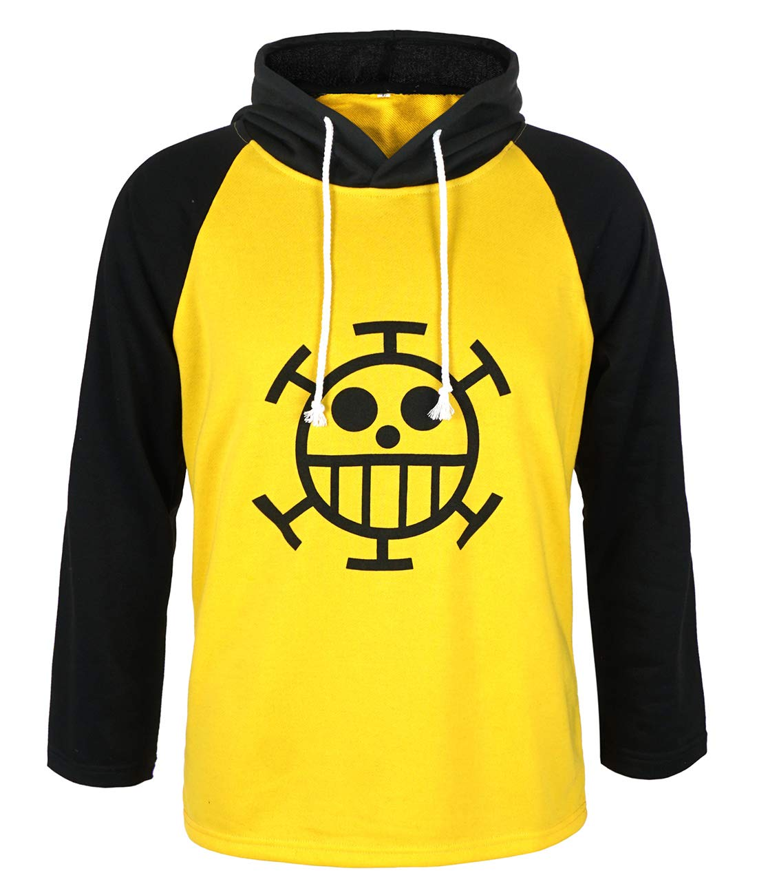

Es intimidante, lo sé, pero es normal estamos hablando de 50 cm de puro yonkou, ahora gracias a esta figura puedes tener a
uno de los 4 primeros emperadores del mar al lado de aquella foto que te sacaste en verano que tanto te gustó, con esta figura
seguro que el gran barbablanca te aceptará en su tripulación y podras formar parte de la banda mas increible de todo one piece,
si no fuera porque está muerto y toda su banda disuelta, esta figura solo vale 500 berris y ahora disculpame
debo irme a llorar un rato aun no supero su muerte.

Sé lo que estas pensando, te gustaría muschisimo que tu mejor amigo fuese un oso polar que habla, pues estás de suerte porque por solo
350 berris pudes obtener esta maravillosa sudadera del gran Trafalgar D. Water Law, el único personaje de one piece en el que su nombre
es mas largo que su espada, conviertete en el cirujano de la muerte, el mejor doctor de los 4 mares y navega hasta encontrar el one piece
o a este paso a derrotar a kaido, aunque dudo que lo consigas, pero al menos iras elgente usuario-ya.
Pues sí, está a la venta el one piece, el tesoro mas codiciado del mundo, el que hara que te conviertas en el rey de los piratas el
tesoro que todo el mundo anda buscando y que lleva casi 1000 capitulos de anime y mas de 1000 de manga sin ser encontrado, pues tu por
solo 5 billones de berris lo puedes tener a mano, eso sí, yo no se lo que és, tu tampoco lo sabes y de hecho nadie lo sabe, por lo tanto
tú compralo y te llegara algo a casa, cualquier cosa, ya se me ocurrirá que enviarte, podria ser algo guay o una simple nota diciendo
que has desperdiciado billones de berris y ahora estoy huyendo a raftel con una nueva identidad, no se prueba suerte.